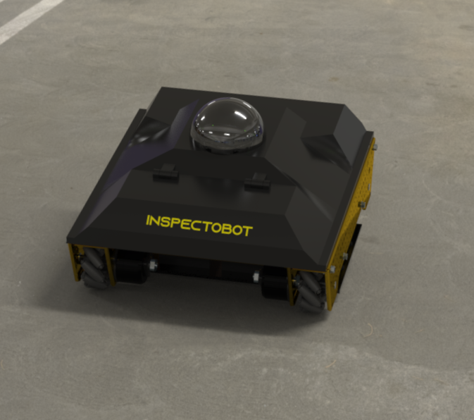

“Though some of this damage is minor, most of the concrete deterioration needs to be repaired in a timely fashion.”
- Frank Morabito, 2018 Structural Engineer for Champlain Towers South
 InspectoBot can inspect buildings at 1/4th the cost, while taking a fraction of the time using our proprietary radar and robotics platform
Structural inspection is largely a manual process. It typically involves skilled structural engineers manually scanning a hand-held Ground Penetrating Radar over a single 2×2 area. This process may take hours. At over $75/hr for skilled labour, this service can be incredibly costly.
Click the button below to reach out and stay connected.